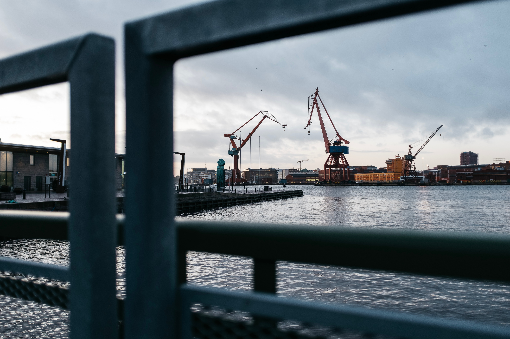
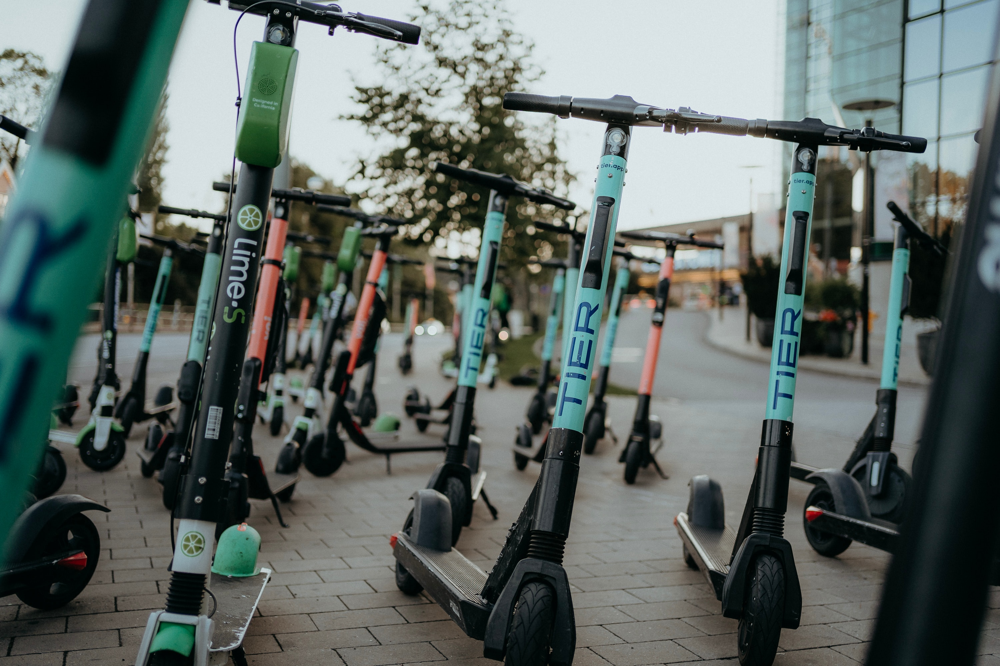
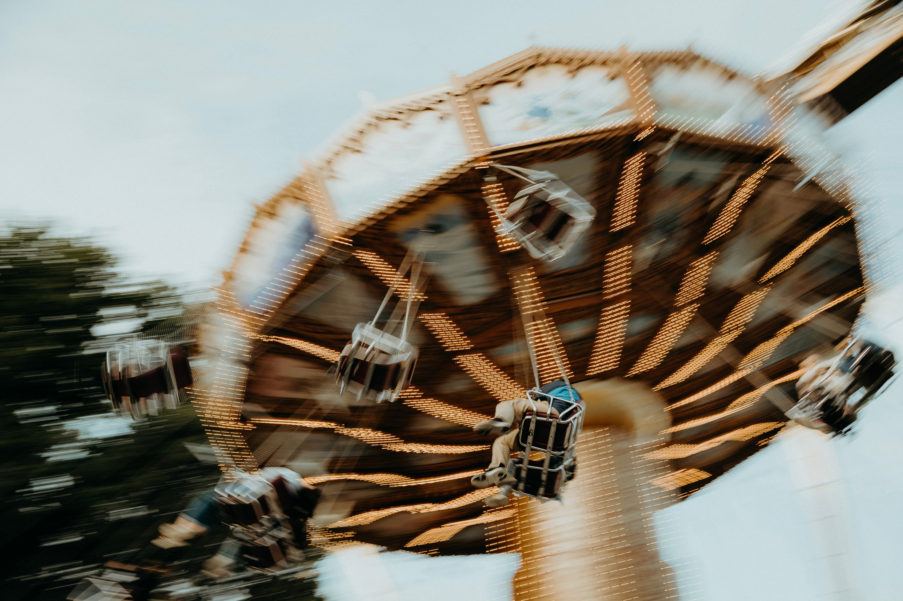

Succékonferens i Göteborg – Fullsatt Konferenscentrum
Gårdagens konferens i centrala Göteborg överträffade alla förväntningar med en rekordpublik som fyllde konferensrummen till bristningsgränsen. Deltagare från näringslivet och akademin samlades för en dag fylld med inspirerande tal och diskussioner om teknologi, innovation och hållbarhet.

Arrangörerna ser fram emot att bygga vidare på framgången och bekräftar Göteborgs ställning som en central mötesplats för affärsevenemang och kunskapsutbyte. Detta evenemang markerar en positiv trend för stadens konferensindustri och öppnar dörren för framtida möjligheter och samarbeten.
Reporter: Chat GPT






Shopping i centrala Göteborg
Dom omtalade kranarna
Alla elsparkcycklas ska bort
Cafe magasinet blir större
Bökerna som blev stora
Ut i naturen under vintern
Skolan blir tom
Liseberg drabas efter olyckan